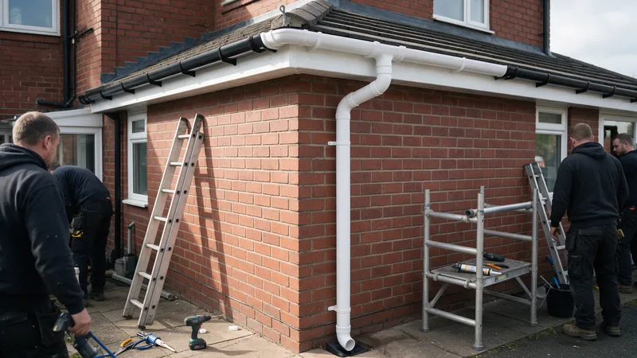

Downpipes
Downpipes.
Clips into the mortar, a swan neck that actually clears the eaves, and the bottom going into a gully rather than splashing on to the path next to your wall.
The part that gets ignored
A downpipe is the simplest thing on the roofline and the one that causes the most damage when it is wrong, because everything it carries ends up against the house. A pipe hanging off the wall, a joint that sprays, a bottom length missing and water going straight on to a path next to the brickwork: all of those put water where nobody can see what it is doing.
Look for a strip of wall that is darker than the rest, growth on the brick or render in a vertical line, or a patch of path that is always green. Those are the signs that the pipe has been losing water for a while.
Where the rain actually goes
Clips, and why they let go
Pipe clips belong in the mortar joints, not the face of the brick. A plug in the middle of a brick splits it, and a clip screwed into soft or wet mortar pulls out the first time the wind gets behind a loose pipe. When a clip has let go, something let water behind it first, so the fix is new clips and also finding out what was wetting the wall.
The other common one is too few clips, or a long straight run with nothing to stop it rattling. The pipe moves, the joints work loose, and in a few years it is swinging in the wind. Spacing is dull and it is most of the job lasting.
The bottom end
The bottom of a downpipe wants to go into a gully with a shoe, or into a back inlet gully, or at the very least discharge away from the wall. What it should not do is splash on to a path that falls back towards the house, because that water runs along the wall and into the ground right next to the foundation.
If the gully itself is blocked or broken, the pipe can be perfect and the water still ends up in the wrong place. We will tell you when the problem is below ground rather than above it, and that is a drainage job rather than ours.

Generated photoGenerated for this demo. Not a photograph of a real job.
 Generated photo
Generated photoThe outlet is the narrowest point on the whole system. Generated for this demo.
On the job
How this one usually goes.
- Find where it has been losing waterThe stain on the wall, the green line on the brick, the wet patch of path. That tells us whether it is a joint, a clip or the bottom end.
- Take the old pipe downCarefully, because loose pipes come down in pieces, and we want a look at the wall behind it while it is off.
- Fix the clips into the mortarInto the joints rather than the brick faces, at a sensible spacing, so nothing rattles and nothing gets a chance to work loose.
- Swan neck and run set outThe offset at the top sized so the pipe clears the eaves properly rather than being pulled tight to the wall at an angle.
- Bottom into the gully, then water through itInto the gully with a shoe or a back inlet, then a bucket down the run while somebody watches the wall and the gully take it.
A sample running order for this demo. Yours depends on the house and what we find when the board comes off.
Questions
Asked about this job.
My downpipe has come away from the wall. Is that urgent?
Worth sorting quickly rather than tonight. If you can reach it safely from the ground, tie it back so it cannot swing and keep people out from underneath. Do not go up a ladder for it in the wind. The repair is usually new clips into the mortar plus finding out what wet the wall in the first place.
Can you just add another downpipe?
Sometimes that is exactly the right answer, particularly on a long run with a single outlet at one end. It means a new outlet cutting into the gutter and somewhere sensible for the pipe to go down and discharge, so it gets looked at properly rather than being promised from the ground.
Where should the water end up?
In a gully that goes to a drain. If yours currently empties on to a path, into a border right against the wall, or into a water butt with no overflow, that is worth changing. Connecting anything into a drain that is not already taking that water is a different conversation and not something we decide for you.
Do you clear blocked downpipes?
Yes, as part of a clean or on its own. A plug of silt halfway down a pipe is common and it is usually the same silt that was in the bottom of the gutter. If the blockage turns out to be below ground in the gully, that is a drainage firm rather than us, and we will say so.
General trade knowledge written for this demo, not advice on your property.
Our work
Sample jobs like this.
 Generated photoPipe off the wallLongridge SampleGenerated photoA cage in the outletRibchester Sample
Generated photoPipe off the wallLongridge SampleGenerated photoA cage in the outletRibchester Sample Generated photoA stain that shows the jointClitheroe Sample
Generated photoA stain that shows the jointClitheroe SampleMade up samples with generated pictures. Tap one for the detail.
Also
The other things we do.
Gutter cleaning
Cleared out by hand from the top down, the outlet checked, the downpipe run through and the muck taken away rather than tipped in your border.
More →Gutter repairs and replacement
A dripping joint, a dropped bracket, a run that holds water in the middle. Most of it is a length and a seal rather than the whole set.
More →Fascias and soffits
The board the gutter hangs off and the board underneath it. Old timber comes off, the roof edge gets looked at, and the vents go back in.
More →Cladding and bargeboards
The sloping boards up the gable and the panels nobody can paint safely any more. Done while the access is already up, not next year.
More →Roofline replacement in uPVC
Fascia, soffit, gutter, bargeboard and the gable, all changed together in one go. One set of access, one mess, one finish.
More →Shall somebody come and look up at it?
Tell us which side of the house and your postcode. If it is pouring over tonight or a pipe has come off the wall, use the urgent line instead.